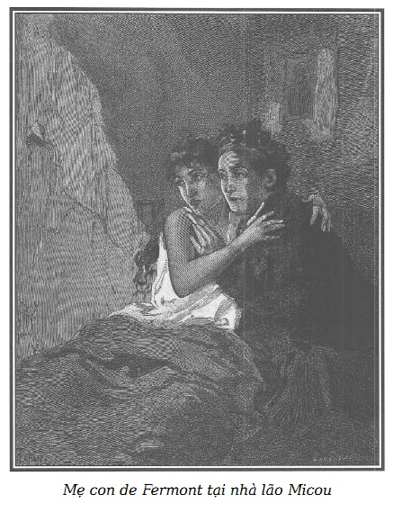

Khi tội bội tín bị trừng phạt, hạn kỳ trung bình của hình phạt là hai tháng tù và hai mươi lăm franc tiền phạt.
Điều khoản 406 và 408 của Bộ luật Hình sự.
Bạn đọc thử hình dung một căn phòng ở tầng bốn của ngôi nhà buồn thảm, ngõ Brasserie.
Một thứ ánh sáng mờ nhạt và u buồn lọt vào căn phòng hẹp qua một cánh cửa sổ nhỏ với ba ô kính đã rạn, cáu bẩn. Một tờ giấy đã cũ, màu vàng nhạt dán trên các bức tường. Ở các góc bức trần rạn nứt rủ xuống những mạng nhện dày. Nền nhà, gạch lở nhiều chỗ, để lộ ra đây đó những cây xà và những lớp ván đỡ phía dưới.
Một chiếc bàn gỗ mộc, một chiếc ghế tựa, một cái rương không khóa, một cái giường đai vải có lưng gỗ trải một chiếc đệm mỏng, những tấm trải giường bằng vải xám nâu thô và một chiếc khăn len cũ màu nâu, là tất cả đồ đạc trong phòng.
Bà Nam tước de Fermont ngồi trên ghế tựa.
Cô Claire de Fermont nằm ngủ trên giường. (Cả hai đều là nạn nhân của Jacques Ferrand.)
Vì chỉ có một chiếc giường, nên đêm đến bà mẹ và cô gái phải lần lượt thay phiên nhau ngủ.
Bao nỗi lo âu, bao niềm sầu muộn dằn vặt làm bà mẹ không sao ngủ được, trong khi cô gái vẫn tìm được ở đây đôi chút nghỉ ngơi và quên lãng.
Lúc này, cô gái đang ngủ yên.
Không còn gì cảm động hơn, đau đớn hơn quang cảnh cơ cực gây nên bởi thói tham tàn của viên chưởng khế đối với hai mẹ con bấy nay quen sống trong cảnh an nhàn dễ chịu, với sự vị nể của những người xung quanh dành cho một gia đình đáng trọng và được trọng.
Bà de Fermont khoảng ba mươi sáu tuổi, nét mặt vừa đượm vẻ dịu dàng vừa cao quý. Những đường nét xưa kia lộng lẫy xinh tươi, nay đã tàn phai suy sụp, mái tóc đen rũ xuống trán từng dải, cuộn lại phía sau, nỗi sầu muộn đã nhuốm nhiều sợi bạc. Mặc một chiếc áo tang, vá nhiều chỗ, bà de Fermont tì trán vào tay, ngồi ở đầu giường, nhìn con gái với một nỗi đau khôn tả.
Claire mới mười sáu tuổi, khuôn mặt nhìn nghiêng dịu dàng và trong trắng, cũng mảnh mai như khuôn mặt mẹ, in hình trên nền xám của những tấm khăn trải giường lớn mà chiếc gối dài nhồi mạt cưa che đi một mảng.
Nước da cô gái đã phai đi sự sáng trong rực rỡ, đôi mắt to khép kín, chập hàng mi đen lên đôi má hóp, đôi môi xưa kia hồng hào và ẩm ướt, giờ đây khô khan và nhợt nhạt, hé mở để lộ ra hàm răng trắng bóng. Những tấm khăn trải giường thô ráp và chiếc mền len đã làm nổi lằn đỏ nhạt ở nhiều nơi trên cổ, vai và đôi tay cô gái.
Thỉnh thoảng cô gái thoáng rùng mình, nhíu đôi mày mỏng và mượt mà như đang bị một giấc mộng buồn ám ảnh. Hình dáng khuôn mặt, đượm một vẻ bệnh hoạn, trông rất thương tâm. Người ta thấy ở đấy những dấu hiệu chẳng lành của một căn bệnh âm ỉ, đáng lo.
Đã từ lâu bà de Fermont cơ hồ không còn khóc được nữa, đôi mắt đã khô nhưng rực sáng độ nhiệt của một cơn sốt âm ỉ ngấm ngầm làm bà suy yếu, đăm đăm nhìn cô gái. Mỗi ngày bà de Fermont càng thấy mệt mỏi hơn. Cũng như con gái, bà cảm thấy bất ổn, mệt mỏi rã rời, dấu hiệu báo trước chắc chắn của một chứng bệnh nặng đang tiến triển. Nhưng sợ làm cho Claire lo lắng, và nhất là, nếu có thể nói như vậy, làm cho chính bản thân sợ hãi, bà cố gắng đem toàn bộ sức lực chống lại những sơ nhiễm của căn bệnh.
Cũng bởi những lý do cao thượng tương tự, Claire, để mẹ khỏi lo âu, cũng gắng che giấu những cơn đau. Hai con người khốn khổ này đã khóc những nỗi sầu muộn như nhau, lại còn mang chung những căn bệnh giống nhau.
Có lúc nỗi bất hạnh lên đến tột cùng và tương lai hiện ra ghê rợn, đến nỗi những tâm hồn kiên nghị nhất cũng không dám đương đầu với nó và phải liều nhắm mắt tự dối mình bằng những ảo ảnh hão huyền.
Đấy là tình cảnh của bà de Fermont và con gái bà.
Diễn đạt được những dằn vặt của người phụ nữ này, trong những giờ phút dài đằng đẵng bà ngắm cô con gái đang thiếp đi nhớ lại dĩ vãng, nghĩ đến hiện tại và tương lai có nghĩa là phác họa lại những nỗi đau thiêng liêng và thánh thiện của một người mẹ có những gì thương tâm, não ruột và sầu thảm nhất. Những kỷ niệm đắm say, những nỗi lo âu ghê rợn, những điều tiên liệu ghê người, những nỗi tiếc thương chua chát, những nỗi chán nản vô biên, những cơn cuồng nhiệt bất lực chống lại những kẻ đã gây nên bao đau khổ, van lơn vô hiệu, những lời cầu nguyện quá đà và còn bao nhiêu những nỗi nghi ngờ đáng sợ về công lý tối thượng của Đấng toàn năng đã không mảy may lưu ý đến tiếng kêu dứt ra từ tấm lòng người mẹ. Tiếng kêu thiêng liêng mà lời đồng vọng phải vút lên đến tận trời xanh: “Hãy rủ lòng thương con gái của tôi!”
– Chao ôi, lúc này con tôi hẳn lạnh lắm! – Người mẹ tội nghiệp vừa lấy bàn tay giá buốt khẽ chạm vào đôi tay giá lạnh của con gái vừa than thở. – Con tôi lạnh lắm. Mới cách đây một tiếng đồng hồ, nó nóng như lửa, nó đang lên cơn sốt. Cũng may mà nó không biết nó bị sốt. Trời ơi, người nó lạnh quá! Mà chiếc chăn này thì mỏng ơi là mỏng. Tôi phải đem đặt chiếc chăn sam cũ trên giường. Nhưng nếu tôi không dùng nó che cửa mà đem vào đây thì những con người say rượu ấy lại như hôm qua, nhìn qua lỗ khóa hoặc các khe ván hở của khung cửa… Than ôi! Sao lại có cái nhà khủng khiếp thế này! Nếu tôi biết nhà cửa thế này, trước khi trả trước nửa tháng tiền nhà thì chúng tôi đã chẳng ở đây. Nhưng mà ai biết được, khi trong tay chẳng có giấy tờ gì, ai chịu nhận mình vào những nhà có sẵn đồ. Nào có bao giờ tôi nghĩ là có lúc cần đến giấy thông hành? Khi ngồi xe từ Angers đến đây… bởi vì nghĩ rằng con tôi đi trong một chuyến xe chở khách thì không tiện… tôi có đâu nghĩ rằng…
Rồi bà ngừng lại và trở nên giận dữ:
– Thế nhưng, quả thật là một điều ô nhục, vì cái lão chưởng khế ấy đã vơ vét hết tài sản của tôi, tôi mới ra nông nỗi này. Thế mà để chống lại, tôi đành chịu bó tay. Đành chịu! Cũng có thể, nếu có tiền, tôi có thể đi kiện, kêu kiện, để nghe tiếng tăm của người em hiền hậu và cao quý của tôi bị lôi tuột xuống bùn, để nghe lời đồn đại là cậu ấy phải kết liễu cuộc đời sau khi bị khánh kiệt và làm tiêu tán luôn tài sản của tôi và con gái tôi. Kêu kiện để được nghe rằng cậu ấy đã đày ải chúng tôi đến cảnh khốn cùng! Ôi, không bao giờ! Không bao giờ! Thế nhưng, nếu vong linh em tôi thiêng liêng, thì cuộc đời, tương lai của con gái tôi đối với tôi cũng rất thiêng liêng. Nhưng mà tôi, tôi đâu có bằng chứng gì để chống lại lão chưởng khế, nếu có khơi ra chẳng qua cũng chỉ là mang tai tiếng uổng công mà thôi. Điều ghê gớm, ghê gớm, – bà nhắc lại sau một lúc im lặng – là đôi khi bị số phận tàn khốc làm cho tính tình trở nên cáu gắt và giận dữ, tôi đã dám quy tội cho cậu ấy và cho rằng việc lão chưởng khế chống lại cậu ấy là phải, có hai người để mà oán trách, nỗi khổ tâm của tôi sẽ dịu đi đôi phần. Rồi tôi lại công phẫn về những điều ước đoán bất công, đáng bỉ đối với người em đáng quý và trung thực nhất. Ôi, lão chưởng khế, hắn có hay đâu những hậu quả khủng khiếp nhất của sự lừa gạt. Hắn tưởng chỉ lừa gạt tiền của, có biết đâu đã giày xéo hai tâm hồn, làm chết dần chết mòn hai người phụ nữ… Than ôi, quả thế, tôi có bao giờ dám cho đứa con tội nghiệp của tôi biết mọi nỗi lo âu, chỉ e nó thêm phiền muộn. Nhưng tôi đau khổ, tôi bị sốt, tôi phải có nghị lực lắm mới khỏi suy sụp. Tôi cảm thấy trong tôi đã có những mầm mống một căn bệnh, có thể rất hiểm nghèo. Phải, tôi cảm thấy nó đến, nó đến gần rồi… Ngực tôi như lửa đốt, đầu tôi như muốn nứt ra. Những triệu chứng này nặng nề đến mức tự tôi không dám nhìn nhận. Trời ơi, nếu tôi ngã xuống, ốm nặng và chết! Không, không! – Bà de Fermont hốt hoảng kêu lên. – Tôi không muốn… Tôi không muốn chết! Để lại Claire ở tuổi mười sáu, không tiền của, bơ vơ, một thân một mình, giữa Paris… Như vậy có thể được không? Không, tôi không ốm đâu. Dù sao, tôi thấy gì nào? Hơi nóng một chút ở ngực, hơi nặng một chút ở đầu. Đó là hậu quả những cơn phiền muộn, những đêm mất ngủ, một chút cảm lạnh, những nỗi lo toan, ai ở vào địa vị của tôi mà chẳng cảm thấy rã rời như vậy. Có gì đáng lo ngại lắm đâu. Nào, nào, không được mềm yếu. Than ôi! Nếu cứ buông mình theo những ý nghĩ ấy, nếu cứ quá lo đến sức khỏe của mình như vậy thì cũng đâm ra ốm thật mất thôi. Và thật tình quả là tôi như thế! Phải chăng tôi phải lo kiếm việc cho tôi và cho cả Claire nữa, bởi vì có người đã đem những bức tranh nhờ hai mẹ con tôi tô màu…
Sau một lúc im lặng, bà de Fermont phẫn nộ thở than:
– Ôi, như thế gớm ghiếc quá! Làm công việc ấy để Claire phải hổ thẹn! Loại bỏ phương tiện sinh nhai eo hẹp ấy bởi lẽ tôi không muốn con gái tôi làm việc một mình vào buổi tối tại nhà ông ta. Có thể chúng tôi sẽ tìm được việc ở nơi khác, may vá hoặc thêu thùa. Nhưng khi người ta không quen biết ai thì khó khăn biết mấy. Mới đây thôi, tôi đã gắng tìm, nhưng hoàn toàn vô hiệu. Khi người ta lâm vào cảnh khốn khổ này thì còn gây lòng tin cho ai được. Vậy thì, số tiền mọn của chúng tôi một khi cạn hết thì biết làm thế nào? Và rồi sẽ ra sao? Chúng tôi chẳng còn gì nữa, chẳng còn chút gì trên cõi đời này. Ấy thế mà tôi cũng đã từng có lúc giàu sang. Thôi, đừng nghĩ đến những chuyện ấy nữa, nó làm tôi choáng váng và phát điên lên mất. Đấy là lỗi của tôi, sao lại cứ sa đà vào những chuyện này, đáng lý phải gắng thế nào cho tâm hồn thư thái. Chính vì thế mà tôi đau ốm đấy! Không, không, tôi có ốm đâu. Hình như tôi bớt sốt rồi. – Người mẹ khốn khổ vừa lẩm bẩm vừa tự bắt mạch cho mình.
Nhưng khốn nỗi, những tiếng mạch đập dồn dập, đứt khúc và rối loạn dưới làn da khô lạnh đã kéo bà về với thực tế phũ phàng. Sau một lúc thất vọng u sầu, bà chua chát tự nhủ:
– Lạy Chúa! Sao Chúa bắt chúng con đau đớn ê chê thế này? Chúng con đã làm gì nên tội? Con gái con chẳng phải là một mẫu mực của sự thơ ngây và lòng sùng đạo sao? Cha nó chẳng phải là hiện thân của lòng tôn trọng danh dự sao? Còn bản thân con chẳng đã kiên trì thực hiện nghĩa vụ của người vợ và người mẹ sao? Tại sao lại cho phép một kẻ khốn nạn làm cho chúng con trở thành nạn nhân của nó? Nhất là đứa con gái tội nghiệp này! Khi con nghĩ rằng nếu lão chưởng khế không tìm cách lừa gạt con, con có gì phải lo cho số phận của con gái mình đâu. Giờ này chúng con đang ở tại nhà mình, không lo lắng gì cho tương lai, chỉ buồn phiền và đau khổ về cái chết tội nghiệp của em con. Trong vài ba năm nữa, con sẽ nghĩ đến việc cho Claire lấy chồng, con sẽ tìm cho nó một nơi xứng đáng, con bé hiền hậu như vậy, dễ thương như vậy, xinh đẹp như vậy… Ai mà không hạnh phúc khi kết hôn với nó? Con cũng muốn để lại một món tiền tuất quả nho nhỏ để sống gần nó, khi nó xây dựng gia đình thì cho nó tất cả số tiền con có, ít ra cũng là một trăm nghìn đồng écu. Bởi vì con cũng dành dụm được đôi chút. Và khi một thiếu nữ trẻ, đẹp, được giáo dục chu đáo như đứa con thân yêu của con có thêm một món hồi môn trên một trăm nghìn écu nữa…
Rồi trở lại với sự tương phản đau đớn của tình trạng buồn thảm hiện tại, bà de Fermont lại lảm nhảm như mê sảng:
– Ấy thế nhưng không thể thế được, vì lão chưởng khế muốn thế. Tôi chỉ còn chờ đợi con gái tôi bị đày ải vào nơi cơ cực nhất. Con bé đáng được hưởng biết bao hạnh phúc. Nếu luật pháp để tội ác này không bị trừng trị, tôi cũng sẽ chẳng để yên đâu. Nếu vạn nhất số phận đẩy tôi đến bước đường cùng, nếu tôi không tìm được cách thoát ra khỏi tình hình bi thảm mà tên khốn nạn kia đã đẩy mẹ con tôi vào, tôi cũng không biết sẽ phải giải quyết ra sao. Tôi, tôi có thể đâm chết hắn, tên khốn kiếp ấy. Sau đó, người ta muốn làm gì tôi thì làm. Tất cả những người mẹ sẽ đứng về phía tôi. Đúng rồi, nhưng còn con gái tôi? Con gái tôi? Để nó một thân một mình, không nơi nương tựa, đấy là nỗi sợ hãi của tôi, vậy nên tôi không muốn chết. Vì vậy tôi không thể giết con người ấy được. Con gái tôi rồi sẽ ra sao, nó vừa mới mười sáu, nó trẻ trung, nó trong trắng như một thiên thần và lại đẹp thế nữa! Nay nó bơ vơ, cơ cực, đói rét. Tất cả những nỗi bất hạnh ấy dồn dập đến không làm cho một cô gái ở trong tuổi ấy choáng váng dữ dội hay sao? Và rồi thì, nó sẽ rơi vào vực thẳm nào? Ôi, khủng khiếp quá! Càng đi sâu vào sự khốn cùng tôi càng thấy bao điều ghê rợn. Sự khốn cùng, ghê gớm với mọi người, nhưng càng ghê gớm hơn đối với những kẻ trọn đời sống nhàn nhã. Điều mà tôi không thể tự tha thứ cho mình, là trước bao nhiêu tai họa đang đe dọa, tôi không thể dập tắt được niềm tự hào khốn khổ. Cho đến khi nào chứng kiến cảnh con gái tôi hoàn toàn không còn gì để ăn nữa tôi mới chịu bó tay xin xỏ. Sao tôi hèn nhát quá vậy!
Rồi với một nỗi chua cay sầu muộn, bà lại tiếp tục thở than:
– Lão chưởng khế đã đày ải tôi đi xin bố thí, vậy thì tôi phải đoạn tuyệt với những điều bó buộc hoàn cảnh mình. Bây giờ không còn là lúc gìn giữ, đắn đo, tất cả những điều ấy xưa kia là đáng quý. Giờ đây, tôi phải ngửa tay xin cho con tôi và bản thân tôi, đúng rồi, vì tôi có tìm ra được việc gì đâu. Tôi phải quyết định đi kêu gọi lòng từ thiện của kẻ khác, bởi vì lão chưởng khế đã muốn vậy mà. Có lẽ phải có một sự khéo léo, một nghệ thuật mà kinh nghiệm đem lại. Tôi phải học hỏi, thì cũng là một nghề như mọi nghề khác. – Bà tiếp tục với một sự sôi nổi cuồng loạn. – Dường như tôi có đủ mọi thứ để làm cho người khác quan tâm. Những tai họa ghê người, không đáng phải chịu đựng và một đứa con gái mới mười sáu tuổi, một thiên thần. Đúng thế, nhưng phải có ý thức, phải có gan sử dụng các ưu thế ấy, tôi nhất định sẽ đạt được điều mình mong muốn. Thế thì, tôi còn phàn nàn nỗi gì. – Bà bỗng bật cười sầu thảm. – Sự giàu sang là mong manh, hữu hạn. Ít ra thì lão chưởng khế cũng đã cho tôi biết được điều này.
Bà de Fermont lặng im suy nghĩ rồi lại tiếp tục với một tâm trạng bình tĩnh hơn:
– Tôi đã luôn luôn nghĩ phải đi tìm việc làm. Điều tôi ao ước là làm gia nô cho người đàn bà ở gác một. Nếu tôi được làm việc ấy, với số tiền công của tôi, có thể đáp ứng đủ nhu cầu của Claire. Có thể, với sự bảo trợ của người đàn bà này, tôi có thể kiếm một công việc nào đấy cho con gái tôi. Nó vẫn sẽ ở đây. Như vậy tôi sẽ chẳng phải rời con. Hạnh phúc biết bao nếu có thể thu xếp được như vậy! Ôi, không, không, như vậy thì tốt đẹp quá! Đấy chỉ là một giấc mộng mà thôi! Lại thêm, muốn có chỗ ấy, lại phải cho người giúp việc kia thôi việc. Và có thể số phận chị ta cũng sẽ khốn khổ như số phận chúng tôi. Nhưng mà, mặc kệ, người ta có đắn đo khi bóc lột tôi không? Nghĩ cho con gái tôi trước đã. Nhưng thử coi, làm sao tôi lọt được vào phòng người đàn bà ở tầng một? Làm cách nào loại trừ được người gia nô của bà ta? Bởi vì một chỗ làm như vậy đối với chúng tôi là một vị trí quá sức mong đợi.
Vài ba tiếng đập mạnh ở cửa làm bà de Fermont rùng mình và cô gái đột ngột thức giấc.

.– Trời đất ơi, có chuyện gì vậy mẹ? – Claire kêu lên rồi ngồi bật dậy, đoạn, như cái máy, cô đưa tay ôm cổ mẹ lúc này cũng hoảng sợ vừa ôm chặt con vừa hãi hùng nhìn ra phía cửa.
– Mẹ ơi, cái gì thế? – Claire nhắc lại.
– Mẹ cũng không rõ con ạ! Con cứ yên tâm, chẳng có gì đâu. Người ta chỉ đập cửa, có lẽ người ta đem bức thư lưu ký ở bưu cục về cho ta.
Giữa lúc ấy những tiếng đập cửa mạnh làm cho chiếc cửa bị mọt lại rung lên.
– Ai đấy? – Bà de Fermont cất giọng run run hỏi.
Một giọng nói khàn khàn, đùng đục, đáp lại:
– Ái chà, các người điếc à, các bà hàng xóm. Ới này, các bà hàng xóm! Ới này!
– Ông cần gì, thưa ông? Tôi không quen ông. – Bà de Fermont đáp lại, gắng giữ cho tiếng mình khỏi lạc đi.
– Tôi là Robin, hàng xóm nhà bà đây mà, cho tôi tí lửa để châm điếu thuốc. Hấp, nhanh lên nào!
– Trời ơi, chính là cái tên thọt luôn luôn say rượu. – Bà mẹ thì thầm với con gái.
– Ái chà! Cho tôi tí lửa nào, không tôi phá tung cửa ra bây giờ. Mẹ kiếp!
– Thưa ông, tôi không có lửa!
– Thế thì bà phải có diêm chứ? Ai chẳng có thứ này! Mở cửa ra xem nào!
– Thưa ông, xin mời ông về cho!
– Bà không muốn mở cửa phải không? Một, hai…
– Xin phiền ông lui cho, nếu không tôi phải kêu lên.
– Một, hai, ba… Không, bà không chịu mở cửa phải không? Vậy tôi đạp toang ra nhé! Này, hấp!
Và tên khốn kiếp choang một cái thật mạnh, cánh cửa bật ra, chiếc khóa cửa long ra.
Cả hai mẹ con hãi hùng thét lên.
Bà de Fermont, dù sức yếu, nhảy xổ đến trước mặt tên cướp lúc này đã đặt chân vào phòng và chặn bước lão:
– Thưa ông, như vậy không tốt! Ông không được vào. – Người mẹ khốn khổ thét lên và đem hết sức lực giữ chiếc cửa hé mở. – Tôi kêu cứu đây!
Bà rùng mình khi trông thấy con người say rượu mặt mũi gớm ghiếc.
– Cái gì, cái gì? – Lão hỏi lại. – Hàng xóm với nhau, không giúp nhau tí chút được sao? Phải mở cửa cho tôi, tôi có phá phách gì đâu?
Rồi với sự ngoan cố ngu độn của kẻ quá chén, gã nói thêm, lảo đảo trên đôi chân không đều.
– Tôi muốn vào, tôi sẽ vào! Và chừng nào chưa châm được điếu thuốc thì tôi chưa ra.
– Tôi không có lửa mà cũng chẳng có diêm. Nhân danh Thượng đế, thưa ông, xin ông lui bước cho.
– Không đúng, bà nói thế để tôi khỏi trông thấy cô gái đang nằm. Hôm qua bà bịt kín lỗ cửa lại. Cô gái ấy xinh lắm, tôi muốn nhìn cô ấy. Bà coi chừng đấy. Tôi đập vỡ mặt bà, nếu bà không chịu để tôi vào. Tôi nói cho bà biết là tôi muốn nhìn cô gái nằm ở giường và tôi châm lửa vào điếu thuốc. Nếu không tôi đập tan tất, kể cả bà nữa!
– Cứu tôi với, bà con ơi! Cứu tôi với! – Bà de Fermont thét lên khi thấy gã thọt lấy vai xô mạnh cánh cửa gần bật ra.
Nghe tiếng kêu cứu, thằng thọt lớn chột dạ lùi lại một bước, đưa nắm đấm ra dọa bà de Fermont.
– Mụ sẽ trả giá việc này, được rồi. Tối nay tôi sẽ trở lại đây, tôi sẽ vặn lưỡi mụ và mụ sẽ câm họng.
Và tên thọt lớn, như người ta thường gọi nó ở đảo của những kẻ mò sông, vừa xuống thang vừa không ngớt lời đe dọa.
Bà de Fermont sợ gã quay lại và thấy chiếc khóa đã bị gãy, kéo chiếc bàn lại gần cửa để chặn lại.
Claire rất xúc động thậm chí hoảng hốt trước cảnh khủng khiếp này, nằm vật xuống chiếc giường tồi tàn, không động đậy, bị một cơn thần kinh phát chứng.
Bà de Fermont quên cả sợ hãi, chạy đến ôm con vào lòng, cho con uống một hớp nước, vuốt ve con, và cô gái dần hồi tỉnh.
Thấy con gái trở lại bình thường, bà dỗ dành con.
– Hãy yên tâm con ạ! Hãy bình tĩnh con ạ! Con thân thương, kẻ độc ác ấy đã đi rồi.
Rồi người mẹ khốn khổ ấy lại thở than với một giọng phẫn nộ và đau đớn không thể tả được.
– Thế nhưng chính lão chưởng khế mới là nguyên nhân chủ yếu của mọi nỗi dằn vặt của mẹ con ta!
Claire nhìn quanh vừa ngạc nhiên, vừa khiếp sợ.
– Con yên tâm, con ạ! – Bà de Fermont vừa âu yếm hôn con vừa nói. – Tên khốn kiếp ấy bỏ đi rồi.
– Mẹ ơi, nếu ông ta quay lại thì sao? Mẹ thấy đấy, mẹ kêu cứu mà có ai chạy đến đâu. Thôi, con lạy mẹ, chúng ta hãy rời khỏi nhà này. Con đến chết khiếp khi ở đây!
– Sao con run cầm cập thế này? Con lại sốt rồi.
– Không, không, – cô gái vội đáp để làm yên lòng mẹ – có gì đâu, con sợ đấy, nó sẽ qua thôi. Thế còn mẹ, mẹ thấy thế nào? Mẹ đưa tay con xem nào. Trời ơi, sao nóng thế này! Mẹ thấy không, chính mẹ mới ốm mà mẹ giấu con.
– Không, con đừng tin như thế, mẹ thấy dễ chịu hơn bao giờ hết! Chính nỗi xúc động mà con người ấy gây nên làm cho mẹ như vậy. Mẹ ngủ rất ngon khá lâu trên ghế, và mẹ cũng mới thức dậy cùng lúc với con đấy thôi.
– Thế nhưng, mẹ ơi, mắt mẹ đỏ quá! Đỏ rực lên ấy!
– À, con ạ, con cũng biết là ngủ trên ghế thì giấc ngủ cũng không làm cho ta thoải mái lắm.
– Đúng thế mẹ ạ, mẹ không ốm chứ?
– Không, không, mẹ bảo đảm với con như vậy. Còn con?
– Con cũng không sao cả, chỉ hơi run một chút vì chưa hết sợ thôi. Con van mẹ đấy, mẹ ạ! Chúng ta hãy rời khỏi căn nhà này.
– Chúng ta đi đâu? Con cũng biết là phải khó khăn lắm chúng ta mới tìm được căn phòng tồi tàn này. Ấy cũng bởi chúng ta chẳng có giấy tờ gì, hơn nữa chúng ta đã trả trước nửa tháng tiền nhà, người ta không chịu hoàn lại tiền cho chúng ta đâu. Mà chúng ta thì còn ít tiền, ít lắm nên chúng ta phải hết sức dè sẻn.
– Có thể nay mai ông de Saint-Remy sẽ trả lời mẹ đấy thôi.
– Mẹ không hy vọng nữa. Mẹ viết cho ông ấy đã từ lâu lắm.
– Chưa biết chừng ông ta không nhận được thư mẹ. Tại sao mẹ không viết cho ông ta một lá thư nữa? Từ đây đến Angers nào có bao xa, ta sẽ nhanh chóng có phúc thư thôi.
– Con gái tội nghiệp của mẹ, con biết là mẹ đã phải chịu đựng quá nhiều rồi đấy.
– Thì mẹ có mất gì đâu? Mặc dù hơi thô bạo, ông ta tốt mà! Ông ta chẳng phải là một trong những người bạn lâu năm nhất của cha con sao? Hơn nữa ông ta còn có họ hàng với nhà ta nữa.
– Nhưng mà bản thân ông ấy cũng túng, tài sản chẳng có là bao. Có thể là ông ấy không trả lời chúng ta để tránh nỗi phiền phải khước từ giúp đỡ chúng ta.
– Nhưng nếu ông ta chưa nhận được thư mẹ thì sao?
– Nhưng nếu ông ấy nhận được thì sao, con? Trong hai điều thì chỉ có một, hoặc là bản thân ông ấy cũng đang ở trong tình thế khó khăn, không thể giúp gì mẹ con ta, hoặc là ông ấy chẳng thèm bận tâm đến chúng ta, vậy thì tội gì lao đầu vào để bị khước từ hoặc bị tủi nhục.
– Mẹ ơi, hãy can đảm lên, chúng ta vẫn còn chút hy vọng. Có thể sáng nay chúng ta sẽ nhận được tin vui.
– Của ông d’Orbigny, phải không con?
– Vâng, đúng thế! Bức thư của mẹ viết nháp hôm trước sao mà giản dị và cảm động thế. Nó trình bày rất rõ ràng nỗi khốn khổ của chúng ta để ông ấy rủ lòng thương. Thật tình, con không biết ai đã khuyên mẹ chưa nên thất vọng về ông ấy.
– Ông ấy chẳng có mấy lý do để quan tâm đến mẹ con ta. Thật ra, trước đây ông ấy có quen biết cha con và mẹ cũng có nghe cậu con nhắc đến ông d’Orbigny như một người đã có quan hệ thân thiết với cậu con trước khi ông này rời Paris, lui về Normandie với bà vợ trẻ.
– Chính điều đó làm cho con thêm hy vọng. Ông ấy có vợ trẻ, bà ta sẽ rất thương người. Hơn nữa, sống ở miền quê, người ta có bao nhiêu việc để làm. Chẳng hạn ông ấy có thể nhận mẹ làm người giúp việc, còn con sẽ làm việc vá may. Bởi lẽ ông d’Orbigny rất giàu, và trong một nhà giàu sang, bao giờ cũng sẵn việc làm.
– Đúng thế, nhưng chúng ta có ít hy vọng được ông ấy quan tâm đến.
– Chúng ta khổ sở quá chừng!
– Dưới con mắt những người nhân từ thì quả là như vậy.
– Chúng ta hy vọng ông d’Orbigny và bà vợ đều là người nhân từ.
– Cùng lắm, trong trường hợp chúng ta không hy vọng gì được ở ông ấy, thì mẹ sẽ bất chấp xấu hổ mà biên thư cho bà Công tước de Lucenay.
– Có phải quý bà mà ông de Saint-Remy thường nói với chúng ta và hết lời ca ngợi về lòng tử tế và sự hào hiệp đấy không?
– Đúng đấy, đó là con gái Hoàng thân de Noirmont. Ông de Saint-Remy biết bà ấy từ lúc còn bé và coi bà ấy như em gái. Bởi vì trước đây ông ấy rất thân với Hoàng thân. Bà de Lucenay quen biết rất rộng, bà ấy có thể tìm chỗ làm cho chúng ta.
– Mẹ nói rất đúng. Nhưng con hiểu vì sao mẹ còn e ngại. Mẹ chưa quen biết bà ta, nhưng ít nhất cha con và cậu con cũng có biết ông d’Orbigny.
– Nếu trường hợp bà de Lucenay cũng không thể giúp gì được, thì mẹ phải cầu khẩn đến nơi trông cậy cuối cùng.
– Nơi nào thế mẹ?
– Đây là một hy vọng mong manh. Một hy vọng hão huyền nữa, nhưng tại sao lại không thử? Người con trai ông de Saint-Remy là…
– Ông de Saint-Remy có một người con trai, hả mẹ? – Claire ngạc nhiên ngắt lời mẹ.
– Có đấy con ạ, ông ấy có một người con trai.
– Ông ấy có nhắc đến bao giờ đâu, mà người này cũng chưa bao giờ đến Angers…
– Quả đúng như vậy và với những lý do mà con có thể biết, ông de Saint-Remy, rời Paris từ mười lăm năm nay, không gặp lại con trai từ ngày ấy.
– Mười lăm năm không gặp lại cha. Điều ấy có thể sao, trời đất!
– Than ôi! Đúng như con nói đấy! Mẹ muốn nói thêm là con trai ông de Saint-Remy giao thiệp rộng rãi với giới thượng lưu, và khá giàu.
– Khá giàu? Trong khi ông bố lại nghèo.
– Toàn bộ tài sản của ông de Saint-Remy con là do bà mẹ để lại.
– Nhưng điều đó có quan trọng gì. Tại sao ông ấy lại để mặc ông cụ thế?
– Ông cụ có lẽ đã không chịu nhận gì từ ông ấy cả.
– Tại sao thế nhỉ?
– Đấy cũng là một vấn đề mà mẹ không sao hiểu được, con thân yêu ạ. Nhưng mẹ nghe cậu con ca ngợi nhiều về lòng hào hiệp của con người trẻ tuổi này. Trẻ tuổi và hào hiệp, ông ta nhất định là người tốt. Bởi vậy, được mẹ cho biết cha con là bạn thân của cha ông ấy, có thể ông ấy sẽ quan tâm đến chúng ta và gắng giúp chúng ta tìm việc làm. Có quan hệ rộng rãi và quyền thế như ông ấy, việc đó chắc cũng dễ thôi.
– Hơn nữa, có lẽ qua ông ấy, chúng ta cũng sẽ biết được ông cụ có còn ở Angers trước khi mẹ biên thư không. Điều đó sẽ lý giải sự vắng tin của ông cụ.
– Con ạ, mẹ tin rằng ông de Saint-Remy không còn mối quan hệ nào với ông cụ nữa. Tuy nhiên, cũng cứ thử xem…
– Trừ phi ông d’Orbigny không làm thỏa mãn được nguyện vọng của mẹ. Con vẫn nhắc lại là không hiểu sao, mặc dù không muốn, con vẫn hy vọng.
– Nhưng mẹ viết cho ông ấy cũng đã lâu, con ạ, trình bày cùng ông ấy nguyên nhân tai họa của chúng ta, nhưng chưa thấy gì, chưa thấy gì cả. Một bức thư gửi từ bưu điện trước bốn giờ chiều nay, sáng mai đã đến Aubiers. Đáng lẽ chúng ta đã có thể nhận được thư trả lời của ông ấy từ năm ngày trước.
– Có thể, trước khi viết cho mẹ, ông ấy đang tìm xem có cách nào giúp ích được cho mẹ con ta không.
– Con nói thế thì chỉ có trời hiểu, con ạ!
– Điều này đối với con cũng giản đơn thôi mẹ ạ! Nếu ông ấy không thể giúp gì được, ông ấy đã trả lời mẹ ngay rồi.
– Trừ phi ông ấy không muốn làm gì cả.
– Ôi, mẹ ơi, có thể như thế được không? Không thèm trả lời cho chúng ta và để chúng ta chờ mong hết ngày này qua tháng khác. Bởi vì người ta khổ thì người ta không ngớt chờ mong.
– Con ạ, đôi khi người ta thường dửng dưng trước những nỗi đau mà người ta chưa hề biết tới.
– Nhưng còn lá thư của mẹ…
– Bức thư của mẹ không thể cho ông ấy một ý niệm về những nỗi lo lắng, những nỗi khổ đau của chúng ta mỗi phút, mỗi giờ. Bức thư của mẹ đâu có diễn tả được cuộc sống khốn khổ, những nỗi cơ nhục mọi bề của chúng ta, cuộc sống của mẹ con ta trong căn nhà khốn khổ này, nỗi hãi hùng mà vừa mới đây thôi chúng ta phải chịu. Bức thư của mẹ đâu có phác họa nổi tương lai khủng khiếp chờ đợi chúng ta nếu… Nhưng mà, con ơi, chúng ta đừng nói đến những chuyện ấy nữa. Trời ơi, con lại run này, con lại bị cảm lạnh rồi.
– Không mẹ ơi, mẹ đừng quan tâm đến những chuyện này. Mẹ hãy bảo con, giả thiết rằng chúng ta thiếu thốn đủ mọi thứ, rằng số tiền ít ỏi chúng ta còn lại để trong rương này đã chi tiêu hết… Có thể nào trong một thành phố giàu có như Paris, hai mẹ con ta phải chết vì đói và vì cơ cực, vì không có việc làm, bởi lẽ một kẻ gian ác đã chiếm đoạt tất cả của cải của mẹ?
– Thôi, đừng nói nữa, con gái tội nghiệp của mẹ.
– Nhưng mà, nghĩ cho cùng, mẹ ơi, tất cả những điều đó có thể xảy ra không?
– Than ôi!
– Nhưng mà Thượng đế am tường mọi việc, có uy quyền xếp đặt mọi việc, tại sao Người bỏ mặc chúng ta? Chúng ta đã bao giờ dám xúc phạm Người.
– Thôi con ạ, mẹ van con đấy, con đừng nên có những ý nghĩ đau buồn như vậy. Mẹ muốn con vẫn cứ hy vọng. Con ơi, con hãy làm mẹ yên tâm với những ảo tưởng thân thiết của con. Mẹ luôn nghĩ đến những chuyện thất bại mà thôi, con biết rồi đấy!
– Vâng, vâng, thưa mẹ, phải hy vọng, như vậy tốt hơn. Người cháu của bác trông nhà hôm nay có lẽ sẽ đem về một bức thư nhận ở phòng lưu ký đấy. Như thế lại phải chi một chút trong số tiền ít ỏi của mẹ, và cũng lỗi tại con. Nếu từ hôm qua đến giờ con không mệt thế này, có phải mẹ con ta có thể tới bưu cục như hôm kia, vì mẹ chẳng muốn để con ở nhà một mình để mẹ tự đến đó lấy.
– Làm sao mẹ làm như thế được, con của mẹ? Con cứ thử nghĩ xem, lúc nãy, cái tên khốn nạn ấy đã phá cửa, mà để lại con một mình thì sẽ ra sao!
– Thôi mẹ ơi, mẹ đừng nói nữa, chỉ nghĩ đến chuyện ấy, con đã khiếp vía.
Giữa lúc ấy, có tiếng gõ cửa khá đột ngột.
– Trời ơi, lại là hắn! – Bà de Fermont lại kêu lên sau cảm giác khiếp sợ ban đầu.
Rồi với tất cả sức mạnh, bà đẩy chiếc bàn chặn cánh cửa lại.
Nỗi sợ hãi của bà vụt tan biến khi bà nhận ra tiếng của lão Micou.
– Thưa bà, thằng André, cháu tôi vừa ở phòng lưu ký bưu điện trở về. Đây là một phong thư ghi địa chỉ là X và Z, thư từ xa gửi tới. Tiền cước tám xu và cả tiền chuyển thư… tất cả là hai mươi xu.
– Mẹ ơi, một bức thư từ tỉnh nhỏ, chúng ta được ông d’Orbigny cứu giúp rồi. Đó là thư của ông de Saint-Remy hoặc ông d’Orbigny! Mẹ thương yêu của con! Mẹ sẽ không khổ nữa, mẹ sẽ sung sướng. Trời có mắt mà! Trời nhân đức mà! – Cô gái phấn khởi reo lên. Và một tia hy vọng ánh lên trên khuôn mặt dịu dàng và xinh xắn.
– Ôi, thưa ông, cảm ơn ông. Xin ông đưa tôi lá thư, xin ông nhanh lên cho! – Bà de Fermont vội kéo chiếc bàn ra và hé mở cánh cửa.
– Hai mươi xu, thưa bà. – Lão Micou vừa nhắc lại vừa chìa bức thư khát khao chờ đợi.
– Tôi sẽ trả ông ngay.
– Ô kìa, thưa bà, cũng không vội lắm. Tôi lên tầng trên, mười phút nữa tôi sẽ trở lại, và nhận tiền sau.
Nói xong, lão đưa thư cho bà de Fermont rồi rời đi.
– Thư từ Normandie gửi tới. Trên tem, có đóng dấu Aubiers. Thư của ông d’Orbigny rồi! – Bà de Fermont vừa reo lên vừa đọc địa chỉ: Gửi bà X. Z… lưu ký, tại Paris*.
Bà de Fermont viết lá thư này ở nơi cư ngụ cũ, cũng chưa biết là sẽ ở đâu, đã yêu cầu ông d’Orbigny trả lời qua lưu ký ở bưu điện. Nhưng vì không có giấy thông hành để nhận thư, bà đã ghi một địa chỉ gồm những chữ cái viết tắt. Chỉ cần nói ra là sẽ được giao thư (Chú thích của tác giả).
– Mẹ thấy chưa, con đoán đúng không? Trời ơi, sao tim con đập mạnh thế này!
– Số phận chúng ta may mắn hay rủi ro là ở đây, con ạ! – Bà Fermont vừa chỉ bức thư vừa nói, giọng lạc hẳn đi.
Hai lần bà run run định bóc lá thư.
Bà không còn đủ can đảm nữa.
Có ai diễn tả được nỗi lo sợ ghê gớm của những người cùng hoàn cảnh như bà de Fermont khi chờ đợi ở một lá thư niềm hy vọng hay nỗi thất vọng?
Sự xúc động nóng bỏng và bồn chồn ở một con bạc mà những đồng tiền vàng cuối cùng phiêu lưu đặt trên một lá bài, mắt sáng rực, lòng phập phồng đợi giây phút quyết định sự suy sụp hay thành công, sự xúc động dữ dội ấy sẽ cho ta một phần nào ý niệm về nỗi lo lắng kinh khủng của người thiếu phụ đáng thương.
Chỉ trong một giây thôi, tâm hồn có thể bay bổng tới niềm hy vọng rạng rỡ nhất hoặc rơi vào một nỗi tuyệt vọng. Tùy theo chỗ anh ta tin tưởng được cứu giúp hoặc bị khước từ, con người khốn khổ lần lượt trải qua những xúc động tương phản cực kỳ dữ dội. Những nỗi cuồng nhiệt về hạnh phúc và tri ân khôn tả đối với tấm lòng hào hiệp đã nghiêng xuống một thân phận hẩm hiu những nỗi oán hận chua cay và đau đớn đối với sự ích kỷ lạnh lùng.
Nếu đây là những nỗi bất hạnh chính đáng, những người thường gia ân có lẽ vẫn cứ tiếp tục gia ân. Trái lại, những kẻ vẫn khước từ thường có thể gia ân nếu họ biết hoặc thấy được niềm hy vọng vào một sự cứu trợ nhân từ hoặc nỗi lo sợ một sự khước từ khinh thị. Nói gọn lại là điều mà ý chí họ có thể gây nên những nỗi niềm khó tả hoặc ghê rợn trong lòng những người đến cầu xin.
– Yếu đuối quá chừng! – Bà de Fermont mỉm cười buồn bã tự trách mình và ngồi xuống giường con gái. – Claire thân yêu của mẹ, một lần nữa, số phận của chúng ta ở đây con ạ. – Bà giơ bức thư ra. – Mẹ nóng lòng muốn biết thư viết những gì, nhưng mẹ không dám… Nếu là một sự khước từ, thì than ôi, quả là hơi sớm…
– Nhưng nếu là lời hứa hẹn giúp đỡ thì mẹ ơi… Nếu lá thư này chứa đựng những lời lẽ nhân từ an ủi làm cho chúng ta tin tưởng ở tương lai như hứa cho chúng ta một công việc tầm thường thôi tại nhà ông d’Orbigny thì mỗi phút đợi chờ chẳng phải mất đi một giây hạnh phúc đó sao?
– Đúng vậy con ạ, nhưng nếu trái lại…
– Không mẹ ạ, mẹ lầm rồi, con chắc chắn như vậy, khi con nói với mẹ là ông d’Orbigny chậm trả lời chính là để đem lại cho mẹ một sự thuận lợi chắc chắn nào đấy. Mẹ cho con xem bức thư một tí nào, con chỉ cần nhìn chữ viết thôi là có thể đoán được là tin lành hay tin dữ. Này mẹ, bây giờ con chắc rằng, – Claire cầm lá thư và nói – chỉ cần nhìn nét chữ rất đẹp, đơn giản, thẳng và kiên quyết, ta cũng đoán được người viết là người trung thực và hào hiệp quen gia ân cho những kẻ khổ đau.
– Mẹ xin con đấy, Claire ạ, đừng ấp ủ những ảo vọng điên rồ, nếu không mẹ không dám bóc thư ra nữa.
– Trời ơi, mẹ thương yêu nhân hậu của con, không cần bóc thư, con cũng có thể nói với mẹ gần đúng nội dung của bức thư, mẹ hãy nghe này: “Thưa phu nhân, số phận của phu nhân và của tiểu thư thật đáng được quan tâm, vì vậy chúng tôi xin phu nhân hãy quá bộ tới nhà chúng tôi nếu phu nhân muốn đảm nhiệm sự trông nom nhà cửa chúng tôi…”
– Con ơi, chiều mẹ một tí, mẹ xin con đấy! Đừng hy vọng quá đáng! Lúc tỉnh mộng sẽ đắng cay… Nào, hãy can đảm. – Bà de Fermont cầm lá thư từ tay con gái và chuẩn bị bóc thư.
– Can đảm ư? Cái đó cần cho mẹ đấy! – Claire tươi cười, bị cuốn hút bởi tấm lòng tin cậy tự nhiên ở lứa tuổi cô. – Riêng con, con chẳng cần đến nó, con tin chắc ở điều con nói. Này mẹ, me có muốn con mở thư ra không? Và con đọc nhé? Mẹ đưa con nào, đừng do dự nữa…
– Phải, mẹ e ngại lắm, đây con! Nhưng thôi, để mẹ đọc cho. – Rồi bà de Fermont bóc thư ra, lòng thắt lại. Cô gái vô cùng xúc động, gần như ngừng thở, mặc dù bề ngoài ra vẻ tin tưởng.
– Mẹ đọc to lên. – Cô hối hả giục mẹ.
– Thư không dài! Do bà Bá tước d’Orbigny viết. – Bà de Fermont liếc nhìn chữ ký và nói cho con biết.
– Càng hay, đấy là dấu hiệu tốt. Mẹ thấy chưa, cái bà phu nhân trẻ tuổi tuyệt vời ấy muốn tự tay phúc thư cho mẹ.
– Để rồi xem con ạ!
Và bà de Fermont, giọng run run, đọc những dòng thư sau:
“Thưa phu nhân, bấy lâu nay Bá tước d’Orbigny bị đau, không thể phúc thư phu nhân trong thời gian tôi đi vắng…”
– Mẹ thấy chưa, có phải lỗi ở ông ấy đâu!
– Hãy nghe đây, hãy nghe đây!
“Sáng nay, từ Paris trở về, tôi vội vã viết cho phu nhân ngay sau khi đã trao đổi với ông Bá tước về bức thư của phu nhân. Bá tước chỉ còn nhớ một cách lờ mờ những quan hệ mà phu nhân nhắc đến giữa Bá tước và em trai phu nhân. Còn tên ngài Nam tước chồng phu nhân thì đối với ông d’Orbigny tuy không phải xa lạ, nhưng ông ấy không thể nhớ đã nghe đến cái tên này trong trường hợp nào. Chuyện mạo nhận cưỡng đoạt mà phu nhân đã khinh suất tố cáo ông Jacques Ferrand, người mà chúng tôi có cái may mắn chọn làm chưởng khế, đối với ông d’Orbigny là một điều vu khống thô bạo mà phu nhân chưa lường hết được tầm quan trọng. Cũng như tôi, thưa phu nhân, chồng tôi đã biết rõ và khâm phục tấm lòng trung thực sáng ngời của con người đáng kính và mộ đạo bị phu nhân công kích một cách thiếu sáng suốt ấy. Như thế để phu nhân thấy rõ là ông d’Orbigny có chú ý đến tình hình quẫn bách của phu nhân, nhưng ông ấy không có nhiệm vụ tìm hiểu nguyên nhân xác thực của tình hình đó, và tự thấy không thể giúp gì phu nhân được.
Xin phu nhân hãy nhận ở đây, cùng với tất cả sự áy náy của ông d’Orbigny, sự tôn trọng đặc biệt của chúng tôi.
Bà Bá tước d’Orbigny.”
Bà mẹ và cô con gái đau đớn sững sờ nhìn nhau, không ai thốt lên lời nào.
Lão Micou gõ cửa và nói:
– Thưa bà, tôi có thể vào để lấy tiền cước và tiền chuyển thư không? Hai mươi xu tất cả.
– Ấy, thế đấy! Một tin vui như vậy đáng để chúng ta trả bằng hai ngày chi tiêu cho cuộc sống của chúng ta. – Bà de Fermont mỉm cười chua chát và đặt bức thư trên giường, bà đến cái rương cũ không có khóa, cúi xuống và mở ra.
– Chúng ta bị mất trộm rồi! – Người đàn bà khốn khổ hoảng sợ la lên. – Hết rồi, hết sạch rồi, – bà sầu não nói tiếp.
Rồi bà đờ đẫn chống tay lên chiếc rương.
– Mẹ nói gì hả mẹ? Cái túi tiền…
Nhưng bà de Fermont vụt đứng dậy, ra khỏi phòng và nói với lão Micou, cũng đang đứng ở bậc thềm:
– Ông ạ, – bà bảo lão ta, mắt long lanh, má ửng đỏ vì phẫn nộ và sợ hãi – tôi có một túi tiền để trong rương. Người ta có lẽ đã lấy trộm của tôi hôm kia trong khi tôi ra khỏi phòng cùng với con gái. Số tiền ấy phải được tìm ra, ông rõ chưa? Ông có trách nhiệm về việc này.
– Người ta đến lấy trộm của bà! Điều đó không đúng. Nhà tôi lương thiện. – Lão Micou đáp lại một cách láo xược và tàn nhẫn. – Bà nói vậy để không trả tiền cước và tiền chuyển thư cho tôi.
– Tôi nói để ông rõ, số tiền đó là tất cả gia sản của tôi, người ta đã lấy trộm của tôi. Nó phải được tìm ra, nếu không tôi phải đi thưa kiện! Ôi, tôi chẳng kiêng nể gì nữa, tôi chẳng tôn trọng gì nữa… Ông thấy không, tôi báo cho ông biết điều đó.
– Bà tưởng như thế là hay lắm đấy, bà chẳng có giấy tờ gì. Bà cứ đi đi, đi mà thưa kiện! Bà đi ngay đi… Tôi, tôi thách bà đấy!
Người phụ nữ khốn khổ chán ngán.
Bà không thể rời nhà, để con gái lại một mình, nằm bẹp trên giường, hoảng sợ vì tên thọt sáng nay, nhất là sau những lời dọa nạt mà lão Micou vừa thốt ra.
Lão này lại tiếp tục:
– Đó là chuyện tào lao, bà chẳng có túi bạc mà cũng chẳng có túi vàng nào. Bà muốn không trả tiền chuyển thư của tôi phải không? Được, tôi cóc cần! Khi nào bà đi qua trước cửa nhà tôi, tôi sẽ bắt nợ cái khăn quàng đen cũ bà choàng trên vai. Nó cũ quá rồi nhưng ít nhất nó cũng đáng giá hai mươi xu.
– Ối, ông ơi, – bà de Fermont bật khóc – xin ông hãy thương mẹ con tôi. Món tiền nhỏ này là tất cả của cải của mẹ con tôi. Món tiền ấy bị mất trộm, chúng tôi chẳng còn gì nữa, chẳng còn gì nữa, ông nghe rõ không? Chỉ còn chờ chết đói thôi!
– Thế bà bảo tôi làm gì bây giờ? Nếu quả thật người ta lấy trộm của bà, mà lại lấy trộm tiền nữa chứ thì số tiền ấy đã bị nướng từ lâu rồi!
– Trời ơi, trời ơi!
– Cái thằng cha chơi vố này không đến nỗi khờ khạo đem đánh dấu tiền và giữ lại để đợi người ta đến tóm cổ, nếu là một người nào ở nhà này, và tôi không tin như thế, bởi vì, mới sáng nay tôi còn nói với ông chú của quý bà ở tầng một, nơi đây quả là một thôn xóm thật sự, nếu người ta lấy trộm của bà, thì đó là một tai họa. Bà có đặt hàng nghìn đơn kiện thì cũng chẳng lấy lại được một xu. Bà cũng chẳng tiến xa hơn được chút nào. Tôi nói thật với bà như thế! Bà hãy tin tôi! Ơ này, – lão Micou sửng sốt ngừng lại khi thấy bà de Fermont lảo đảo – bà sao thế này? Người bà nhợt nhạt ra thế? Bà hãy coi chừng! Cô gái, mẹ cô ốm đây này. – Lão vừa nói vừa tiến lại khá kịp thời để đỡ người mẹ khốn khổ, bị nỗi thất vọng cuối cùng này vùi dập, cảm thấy kiệt sức. Nghị lực giả tạo từng tiếp sức cho bà đứng vững lâu nay đã phải quy phục trước sự tấn công mới này.
– Chúa ơi, mẹ sao thế mẹ? – Claire không gượng dậy được, la lên.
Lão chứa chấp đồ gian, mặc dầu ở tuổi năm mươi, vẫn còn tráng kiện, bỗng động lòng trắc ẩn, đưa tay đỡ bà de Fermont, lấy đầu gối đẩy cửa vào phòng trong lúc cô gái đang nằm, nhưng dẫu sao cũng phải đưa bà mẹ vào, bà bị ngất, không thể để ở ngoài.
Vừa thấy lão bước vào, Claire hét lên một tiếng hãi hùng, và lấy chăn trùm kín người.
Người chứa chấp đồ gian đặt bà de Fermont ngồi trên ghế cạnh giường rồi đi ra để cửa khép hờ, thằng thọt lớn đã đập hỏng ổ khóa rồi.
Một giờ sau cơn chấn động cuối cùng này, căn bệnh dữ dội bấy nay âm ỉ và đe dọa bà de Fermont đã bộc phát.
Bị sốt nặng, lại mê sảng, người đàn bà tội nghiệp này nằm lả trên chiếc giường có Claire đang nằm bất tỉnh. Cô gái chỉ còn một thân một mình cũng đang ốm đau như mẹ, không có tiền, không nơi nương tựa, nơm nớp lo sợ tên cướp ở kế bên, có thể xông vào bất cứ lúc nào.